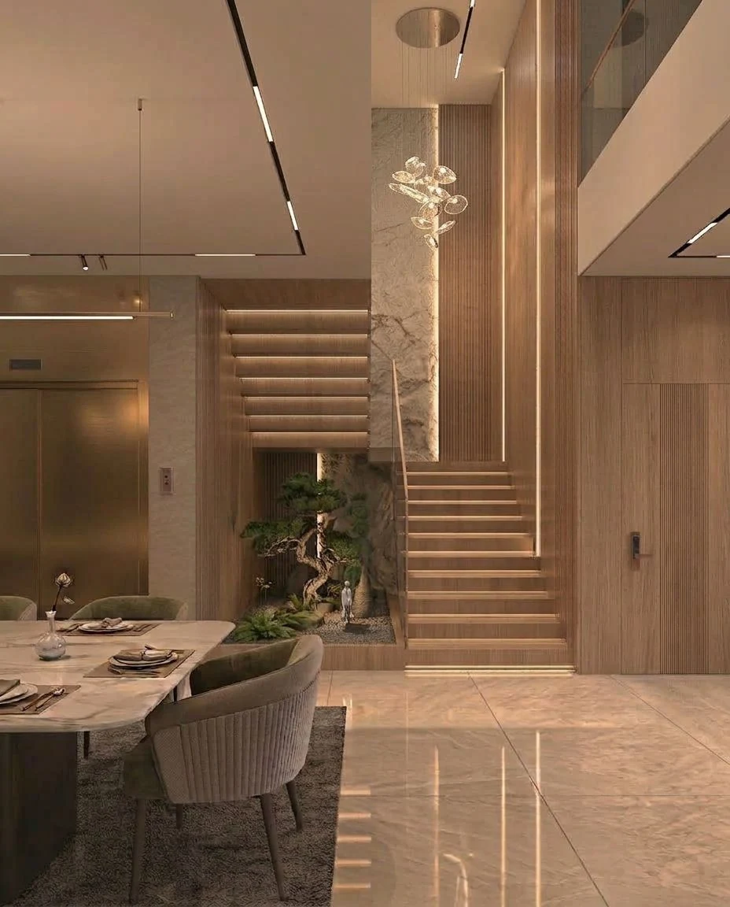
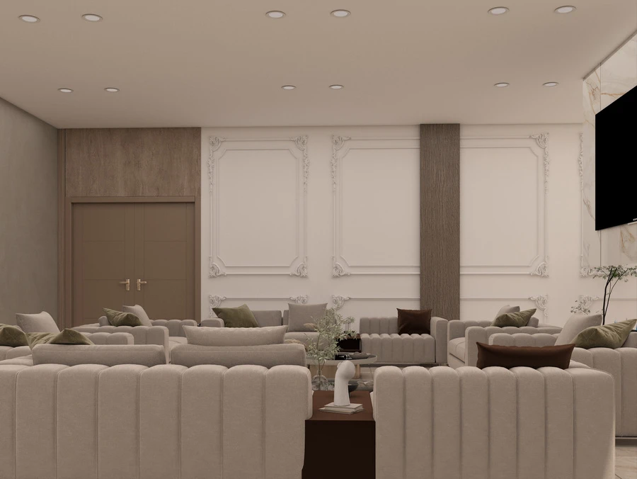
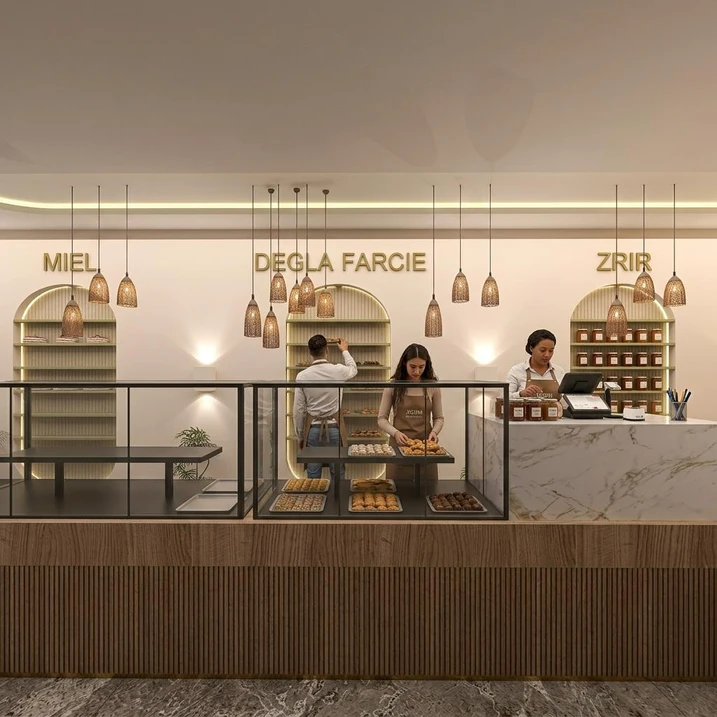
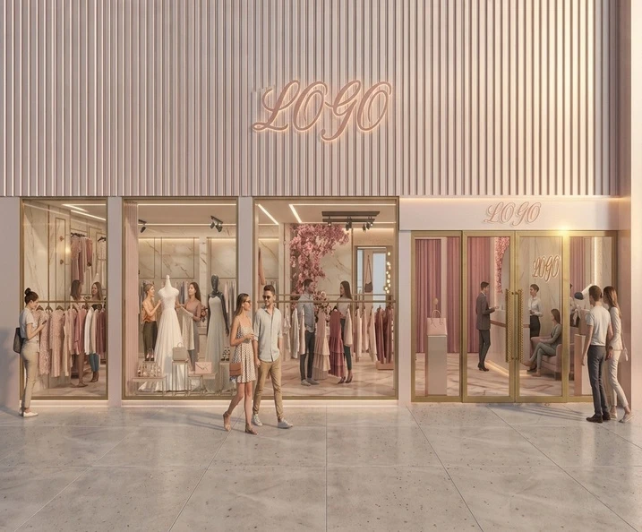

Écoute & conseil
Chaque projet démarre par une écoute attentive de vos besoins, votre style et votre budget.
À PROPOS DE NOUS
Chez AlphaDesignPro, un intérieur ne se résume pas à son apparence. Il se vit. À l’écoute de vos envies, nous imaginons des espaces où lumière, matières et usages trouvent leur équilibre.
Rencontrer l’architecte

NOTRE APPROCHE
Chaque projet démarre par une écoute attentive de vos besoins, votre style et votre budget.
Plans 2D, visuels 3D réalistes et choix de matériaux adaptés à votre espace et à vos usages.
Un seul interlocuteur du premier croquis jusqu’à la remise des clés, sans sous-traitance floue.
Finitions soignées, mobilier durable et suivi de chantier rigoureux à chaque étape.
NOS UNIVERS

Villas de standing, appartements modernes, réagencement sur mesure et suites privées pensés pour le confort suprême.

Boutiques, showrooms, sièges sociaux et bureaux d’entreprise valorisant votre image de marque auprès de vos clients.

Hôtels, restaurants, cafés et lounges (CHR) conçus pour captiver votre clientèle et optimiser les flux de service.
JOURNAL
Des idées et des conseils pour imaginer un intérieur qui vous ressemble.
Des volumes ouverts et des circulations fluides pour mieux vivre chez soi.
Avant de choisir le mobilier, observez vos déplacements et les moments que vous passez dans chaque pièce. Des passages dégagés et des rangements adaptés permettent de créer un intérieur agréable à vivre.

Textures, teintes et finitions : trouver un équilibre qui vous ressemble.
Associez une matière dominante à quelques accents. Comparez les échantillons dans la pièce, sous la lumière du jour et sous l’éclairage du soir : une même teinte peut paraître très différente.

Associer lumière naturelle et éclairage pour révéler chaque espace.
Combinez un éclairage général, une lumière de travail et quelques points plus doux. Cette diversité accompagne les activités et révèle les volumes sans éclairer toutes les zones de la même manière.

Choisir des aménagements utiles, élégants et adaptés au quotidien.
Un aménagement sur mesure commence par un inventaire des besoins. Prévoyez les dimensions utiles, les ouvertures et l’accès aux objets avant de choisir les finitions.
CONTACTEZ-NOUS
Une idée, un lieu à transformer, une envie de changement ?
Racontez-nous votre projet.
STUDIO & BUREAU
Berrechid, Maroc